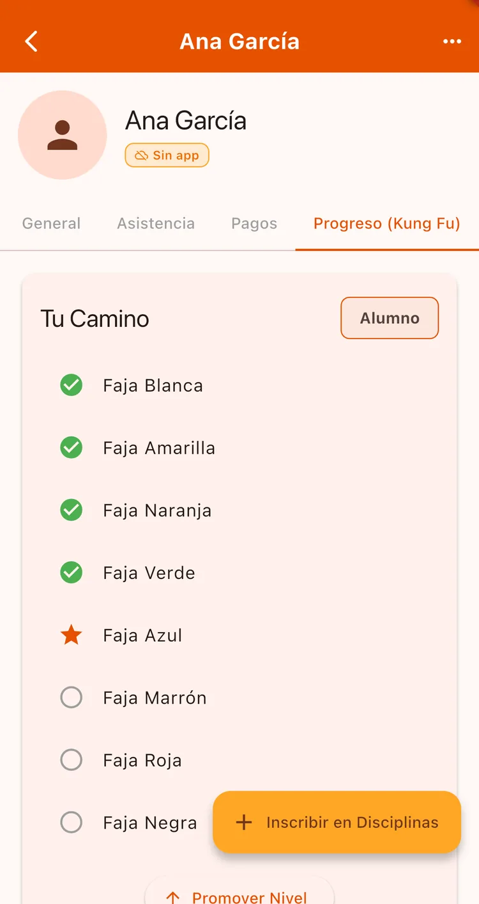
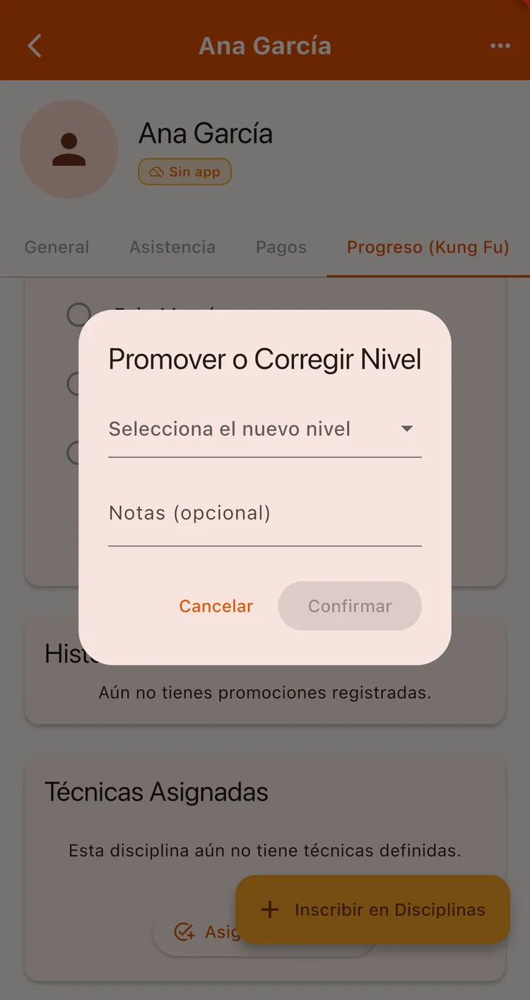
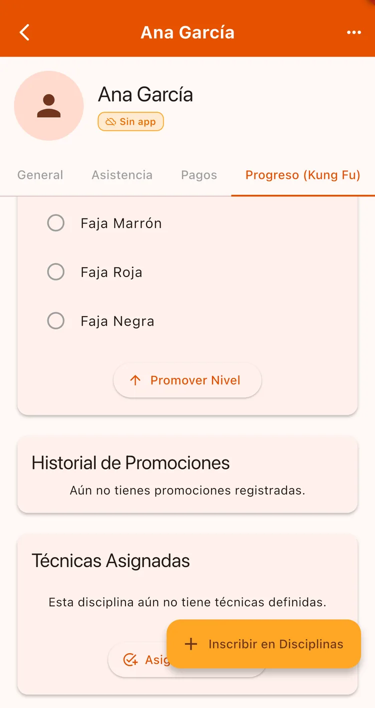

¿Para qué sirve?
Es el corazón de la app para el alumno: ver qué técnicas tiene asignadas, cuánto le falta y celebrar cuando sube de nivel. Para vos, es tener el progreso de cada uno ordenado en vez de en la memoria.
Antes de empezar
- Tener la currícula cargada (niveles y técnicas).
- Tener al alumno inscripto en la disciplina.
Paso a paso
Inscribí al alumno en la disciplina
Si el alumno todavía no está en ninguna disciplina, entrá a su ficha y usá Inscribir en Disciplinas. Por cada disciplina aparece una pestaña propia de progreso.

Asigná técnicas
En la pestaña de progreso, tocá Asignar Técnicas. Vas a ver todas tus técnicas agrupadas por categoría; marcá las que le tocan a ese alumno y guardá.
El alumno recibe una notificación y las ve en su app.
pro-tecnicas
Promové de nivel
Cuando esté listo para el siguiente cinturón, tocá Promover Nivel. Elegí el nuevo nivel y, si querés, dejá una nota (por ejemplo «Excelente progreso»).
Al alumno le llega la notificación con la felicitación.

Consultá el historial
Debajo tenés el historial completo de promociones con sus notas y fechas. Si te equivocaste, cada promoción se puede revertir.

Aprovechá el campo de notas al promover: dentro de un año vas a agradecer tener escrito por qué promoviste a cada alumno.